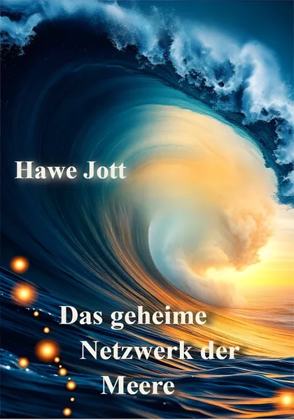

Ebook - Das geheime Netzwerk der Meere
Produktprofil · Marktplatz-Daten 2026-10-13 · Verkaufsseiten-Recherche 2026-10-13 · Kategorien: Travel & Culture, Education
- Ebook - Das geheime Netzwerk der Meere ist ein/e E-Book in Travel & Culture und Education, vertrieben über den Digistore24-Marktplatz von Anbieter joebgesbuchverleger39ac, gelistet seit 2026-04-30.
- Listenpreis $7.30; Digistore24 meldet — Checkout-Konversion, — Stornierungsquote und 50 % Affiliate-Provision.
- Verdienst pro Verkauf (Affiliate): $3.66 (Anbieter-seitige Statistik, keine Prognose).
Interesse an Ebook - Das geheime Netzwerk der Meere? Aktueller Preis, Boni und Garantiebedingungen finden Sie auf der offiziellen Seite des Anbieters:
Offizielle Verkaufsseite ansehen
Affiliate-Link (Werbung) — wir verdienen ggf. eine Provision, ohne Mehrkosten für Sie.

Marktplatz-Daten
| Produkttyp | E-Book |
|---|---|
| Preis | $7.30 (Single payment) |
| Affiliate-Provision | 50 % |
| Garantie/Rückgabe | Laut Verkaufsseite des Anbieters — vor dem Kauf auf der offiziellen Seite prüfen |
| Anbieter | joebgesbuchverleger39ac (gelistet seit 2026-04-30) |
| Marktplatz-Statistiken* | Checkout-Konversion — · Stornoquote — · Verdienst/Verkauf $3.66 |
* Anbieter-seitige Statistiken von Digistore24; sie hängen von der Traffic-Qualität ab und sind keine Prognose.
Marktplatz-Beschreibung des Anbieters
Ein hochaktuelles Wissens-Thema mit enormer Reichweite: Dieses Buch entschlüsselt die unsichtbaren Meeresströmungen, die Klima, Ökosysteme und das Leben auf der Erde maßgeblich beeinflussen. Es trifft exakt den Nerv von Lesern, die sich für Klimawandel, Umwelt und globale Zusammenhänge interessieren, und bietet komplexes Wissen verständlich und spannend aufbereitet. Die Verbindung aus Wissenschaft, Aktualität und globaler Relevanz sorgt für starke Aufmerksamkeit und vielseitige Vermarktungsmöglichkeiten im Bildungs- und Doku-Bereich. Ein ideales Produkt für Affiliates, die auf nachhaltige Nachfrage und inhaltlich starke Conversion setzen.
Von der Verkaufsseite des Anbieters
Seitentitel: Das geheime Netzwerk der Meere von Hawe Jott - Digistore24
Abschnitts-Überschriften
- Das geheime Netzwerk der Meere von Hawe Jott
- Das geheime Netzwerk der Meere von Hawe Jott
- Das geheime Netzwerk der Meere von Hawe Jott
Einstiegstext
Einleitung Die Ozeane wirken auf den ersten Blick ruhig und unveränderlich. Doch unter ihrer Oberfläche verbirgt sich ein dynamisches System aus gewaltigen Strömungen, das unseren Planeten maßgeblich beeinflusst. Dieses Buch nimmt Sie mit auf eine Reise in diese unsichtbare Welt.
Es zeigt, wie eng das Leben auf der Erde mit den Bewegungen der Meere verknüpft ist – oft auf eine Weise, die uns im Alltag kaum bewusst ist.
Dieses Buch erklärt die Meeresströmungen als ein globales Netzwerk – als ein System, das Wärme, Nährstoffe und Leben über den gesamten Planeten verteilt. Es beleuchtet sowohl die physikalischen Grundlagen als auch die konkreten Auswirkungen auf Klima, Umwelt und Gesellschaft.
Von bekannten Strömungen wie dem Golfstrom bis hin zu komplexen Phänomenen wie El Niño oder der thermohalinen Zirkulation werden die wichtigsten Systeme verständlich erklärt.
Preisangaben auf der Seite: $10
Recherche-Methode: rohes HTML · 1977 Wörter · Qualität: rich · recherchiert am 2026-10-13. Vollständige Recherche-Datei (MD) ↗
Wie Produkte dieser Art geliefert werden
Allgemeiner Hinweis zu diesem Produkttyp (keine anbieterspezifische Anleitung): E-Books auf Digistore24 werden als digitaler Download geliefert (meist PDF/EPUB): direkt nach dem Checkout erhalten Sie einen Downloadlink oder Mitgliederzugang und können auf jedem Gerät lesen. Für die genaue Anwendung von Ebook - Das geheime Netzwerk der Meere sind die offizielle Verkaufsseite und die enthaltenen Materialien maßgeblich.
Gut zu wissen
- Keine Garantie-Formulierung in unserer Recherche gefunden — bestätigen Sie das Rückgabefenster auf der offiziellen Seite, bevor Sie kaufen.
- Marktplatz-Zahlen (Preis, Provision, Konversion, Stornoquote) — Quelle: offizielle Digistore24-Marktplatz-API (Affiliate-Sicht), Stand 2026-10-13. Gegenprüfung: Marktplatz-Suche nach Produkt-ID 689162.
- Verkaufsseiten-Zitate — Quelle: https://www.checkout-ds24.com/product/689162, abgerufen 2026-10-13 (Methode: rohes HTML). Verify: offizielle Seite öffnen.
- Garantie / Rückgabe — vom Anbieter festgelegt; vor dem Kauf auf der Verkaufsseite bestätigen.
- Nicht von uns geprüft: Produktqualität, Ergebnisse, Testimonials — kein Praxistest für dieses Listing durchgeführt.
Häufige Fragen zu Ebook - Das geheime Netzwerk der Meere
Antworten aus dem Marktplatz-Snapshot (2026-10-13) und der Verkaufsseiten-Recherche (2026-10-13); Anbieteraussagen sind inline gekennzeichnet.
Was ist Ebook - Das geheime Netzwerk der Meere?
Ebook - Das geheime Netzwerk der Meere ist ein Angebot des Typs „E-Book" im Digistore24-Marktplatz, Anbieter: joebgesbuchverleger39ac, gelistet seit 2026-04-30. Eingepflegt unter Reisen & Kultur und Bildung. Digistore24 wickelt Checkout, Lieferung und Rückgaben ab.
Wie viel kostet Ebook - Das geheime Netzwerk der Meere?
Der Digistore24-Marktplatz listet es für $7.30 (single payment). Preise legt der Anbieter fest und können sich ändern — der Marktplatz-Eintrag oben zeigt den Schnappschuss; die offizielle Verkaufsseite zeigt den aktuellen Preis.
Gibt es eine Geld-zurück-Garantie für Ebook - Das geheime Netzwerk der Meere?
Unsere Verkaufsseiten-Recherche hat keine explizite Garantie-Formulierung gefunden. Viele Digistore24-Produkte bieten 60 Tage Geld-zurück, aber das legt jeder Anbieter selbst fest — bestätigen Sie es auf der offiziellen Verkaufsseite, bevor Sie kaufen.
Ist Ebook - Das geheime Netzwerk der Meere seriös?
Wir bewerten keine Seriosität — wir veröffentlichen überprüfbare Zahlen: Anbieter joebgesbuchverleger39ac (gelistet seit 2026-04-30), Checkout-Konversion —, Stornoquote —, Affiliate-Verdienst/Verkauf $3.66 (alles Anbieter-seitige Marktplatz-Statistiken). Lesen Sie unsere 6-Punkte-Bewertungsmethode und entscheiden Sie anhand der Zahlen — oder diskutieren Sie Ebook - Das geheime Netzwerk der Meere auf GitHub.
Wo kann ich Ebook - Das geheime Netzwerk der Meere sicher kaufen?
Nur über die offizielle Verkaufsseite, die auf dieser Seite verlinkt ist (Checkout und Rückgaben laufen über Digistore24). Prüfen Sie dort Preis und Garantie vor der Bestellung. Der Link ist ein Affiliate-Link — der Kauf unterstützt diese Website ohne Mehrkosten für Sie.
Wie erhalte ich Ebook - Das geheime Netzwerk der Meere nach der Zahlung?
Der Checkout läuft über Digistore24: Nach der Zahlung erhalten Sie Ihren Zugang oder Download per E-Mail und in Ihrem Digistore24-Kundenkonto. Lieferdetails für diesen Produkttyp: E-Books auf Digistore24 werden als digitaler Download geliefert (meist PDF/EPUB): direkt nach dem Checkout erhalten Sie einen Downloadlink oder Mitgliederzugang und können auf jedem Gerät lesen. Bei Problemen kann der Digistore24-Käufersupport Ihre Bestellung wiederherstellen.
Alle 50 Käuferfragen zu Reisen & Kultur — das komplette Kategorie-FAQ.
Ebook - Das geheime Netzwerk der Meere auf Reddit diskutieren
In Community-Threads vergleichen echte Käufer Erfahrungen. Wir verlinken Communities, keine einzelnen Posts — Threads verschwinden, Subreddits bleiben:
- r/travel — deutschsprachige Community mit Diskussionen zu travel & culture.
- Reddit-Suche nach „Ebook - Das geheime Netzwerk der Meere" — Live-Ergebnisse, von uns nicht beeinflusst.
- Top-„Erfahrungs"-Treffer dieses Jahr — selbst nach Aktualität filtern.
Passendes auf Amazon.de
Physische Produkte und Zubehör, die häufig zusammen mit Ebook - Das geheime Netzwerk der Meere gekauft werden:
- Reisezubehör auf Amazon.de — Top-Ergebnisse, Amazon-Ranking.
- Bestseller: Reisezubehör — live Liste von Amazon, von uns nicht kuratiert.
Werbung: Als Amazon-Partner verdient DigistorePicks DE an qualifizierten Käufen (Partner-tag adminstorede-21). Amazon setzt eigene Preise und Provisionen (niedrige einstellige Prozente — weit unter den 30–75% der Digistore24-Anbieter). Amazon ist ein Convenience-Angebot für Sachprodukte, kein Ersatz für das digitale Produkt oben.
Ähnliche Angebote in Reisen & Kultur

Hohe Provision : 50 % Provision auf jede Empfehlung! Statt Holzklasse endlich Business oder First Class Flüge zu Economy Preisen ✈️ Bezahle Business + First Cla
![Goodbye 9 to 5: Digitaler Nomade werden PREMIUM [Onlinekurs]](../assets/products/32101.webp)
Empfehle unser einzigartiges Produkt für alle angehenden digitalen Nomaden mit einer hohen Kaufrate. Deine Vorteile: Exzellente Conversions : Profitiere von uns
![Goodbye 9 to 5:Digitaler Nomade werden STANDARD [Onlinekurs]](../assets/products/32102.webp)
Empfehle unser einzigartiges Produkt für alle angehenden digitalen Nomaden mit einer hohen Kaufrate. Deine Vorteile: Exzellente Conversions : Profitiere von uns

Die ganzheitliche Lösung gegen Flugangst – entwickelt von einem Piloten. Der FlyCalm Ultimate Kurs ist die umfassendste Online-Lösung gegen Flugangst . Er richt
Weitere Angebote von joebgesbuchverleger39ac
Gesamtes Sortiment: joebgesbuchverleger39ac Anbieter-Hub — alle Listings mit Marktplatz-Daten.

Dieses Buch trifft einen hochaktuellen Nerv: die wachsende Verunsicherung rund um 5G, elektromagnetische Strahlung und Windkraft. Es spricht gezielt eine kritis

Ein hochaktuelles Sachbuch für politisch interessierte Leser, das die verborgenen Mechanismen globaler Machtstrategien verständlich und tiefgehend aufbereitet.

Dieses Buch trifft den Nerv einer hochaktuellen, stark nachgefragten Thematik rund um Geopolitik, Machtstrukturen und den Iran-Konflikt und spricht eine informa

Dieses Buch trifft den Nerv einer stark wachsenden Nachfrage nach Stressreduktion, Achtsamkeit und mentaler Gesundheit in einer überreizten, urbanen Welt. Es ve
Gleicher Anbieter auf unserer englischen Website
- Ebook - My Human Quest — $82.12 (Personal Development)
- Ebook - The Control Series — $30.19 (Personal Development)
- Ebook - The Human Condition System — $25.71 (Personal Development)
Gleicher Anbieter, englischsprachige Marktplatz-Listings.
Ebook - Das geheime Netzwerk der Meere ist auch gelistet in
Bildung (597 Produkte)
Ähnliche Preislage in Reisen & Kultur

Besser reisen und dabei Geld sparen? Kein Problem wenn du weißt wie du mit Alltagsausgaben Meilen sammeln kannst. Diese Meilen kannst du dann nutzen um bis zu 9

Der Low-Budget-Hochzeitsplaner richtet sich an Brautpaare, die schön heiraten möchten, aber nicht unnötig viel Geld ausgeben wollen. Das digitale PDF hilft dabe

Tauche ein in das Herz Brasiliens – in ein Land voller Lebensfreude, Musik, Tanz und Begegnungen. Autorin Marilia Grossmann führt die Leser:innen auf eine sinnl
Ähnliche Suchanfragen
Wo Sie es sich ansehen können
Wo Sie es sich ansehen können
Aktuelle Preise, Garantie und Boni finden Sie auf der offiziellen Verkaufsseite:
Offizielle Verkaufsseite ansehen
Das ist ein Affiliate-Link (Werbung) — kaufen Sie darüber, verdienen wir ggf. eine Provision, ohne Mehrkosten für Sie.
Quellen & weiterführende Informationen
- Offizielle Verkaufsseite (aktueller Preis, Garantie, Boni): www.checkout-ds24.com/product/689162 (Affiliate-Link)
- Öffentliche Digistore24-Produktseite: digistore24.com/product/689162
- Vollständige Recherche-Datei (Markdown, versioniert): content/products/56401-ebook-das-geheime-netzwerk-der-meere.md
- Marktplatz-Kategorie: Reisen & Kultur
Wie wir Produkte wie Ebook - Das geheime Netzwerk der Meere bewerten
Sechs Prüfungen, ausschließlich mit offiziellen Marktplatz-Zahlen. Die vollständige Bewertungsmethode lesen · unsere Recherche-Standards & Kennzeichnung.
Fragen oder eigene Erfahrungen mit Ebook - Das geheime Netzwerk der Meere?
Praxis-Tests veröffentlichen wir erst, nachdem wir ein Produkt selbst gekauft haben — aber Ihre Erfahrung hilft anderen Lesern: Diskussion zu Ebook - Das geheime Netzwerk der Meere auf GitHub starten/verfolgen. Falsche Zahl gefunden? Korrektur melden — jede Seite zeigt ihre Datenstände, Korrekturen gelten für die ganze Website.